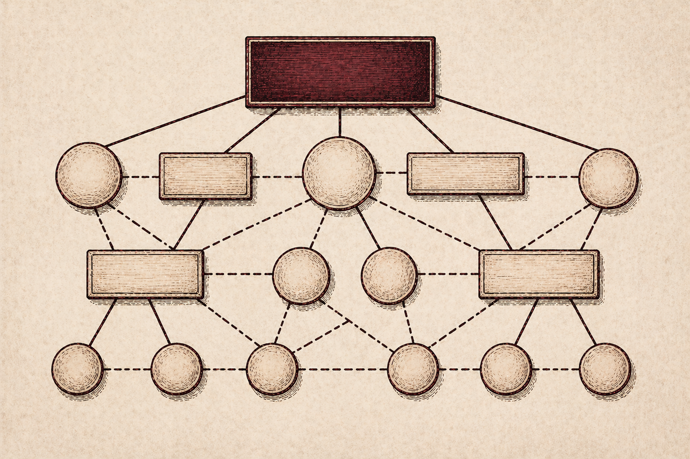

Part Two
Knowledge Codification and the Limits of Representation
The rhetorical work of information architecture begins even before the interface. The processes of knowledge codification — deciding what knowledge is worth making explicit, and how — are themselves rhetorical acts that shape what can be known through a system.
What Codification Does
Davenport and Prusak describe codification as the effort to put organizational knowledge “into a form that makes it accessible to those who need it,” turning knowledge into something “organized, explicit, portable, and easy to understand as possible.” This sounds straightforwardly practical. But the process is not neutral.
Codification requires decisions about what knowledge is worth codifying, how it should be categorized, what distinctions matter, and how concepts should be named and related to one another. Each of these decisions reflects organizational priorities and assumptions — not objective truths about the knowledge itself.
The central challenge of codification is that knowledge resists the process. As Davenport and Prusak identify it: the primary difficulty is “how to codify knowledge without losing its distinctive properties and turning it into less vibrant information or data.” This is a fundamentally rhetorical problem. Too little structure and knowledge remains inaccessible; too much and it is flattened into something that no longer conveys what was meaningful about it. The codifier must make judgments — not algorithmic determinations — about how to structure knowledge in ways that preserve its value while making it available.
The Tacit/Explicit Distinction

Particularly significant is the tacit/explicit distinction that runs through both Davenport and Prusak and Dalkir. Tacit knowledge — the know-how, experiential understanding, and contextual judgment that resides within practitioners — cannot simply be transferred into a document or database.
As Davenport and Prusak observe, such knowledge “incorporates so much accrued and embedded learning that its rules may be impossible to separate from how an individual acts.” When tacit knowledge is codified, it is necessarily transformed. The richness of the original is reduced to what can be represented in the system’s structural categories. This transformation is not transparent. The resulting representation is shaped by the categories the system makes available, the vocabulary it employs, and the hierarchical relationships it encodes.
Every codification decision is therefore a rhetorical choice about what to preserve, what to simplify, and what to lose.
Taxonomies as Rhetorical Constructs
Dalkir elaborates on the organizational stakes of this process. She argues that effective knowledge management depends on establishing structure before deploying tools — a priority captured by Koenig’s formulation “taxonomy before technology.” The implication is that the conceptual architecture of a knowledge system is prior to and more consequential than the technologies used to implement it.

Taxonomies are not impartial organizational schemes. Dalkir describes organizational taxonomies as driven not by objective first principles but by consensus: “the purpose of an organizational taxonomy is not to come up with a universally accepted way of describing reality. Rather, an organizational taxonomy is a mixture of a depiction of concrete components and abstract concepts that together make up the context of that particular company.”
Taxonomies are, in this sense, rhetorical constructs that encode organizational values and shape how knowledge workers communicate, search, and make sense of what they find. This means the rhetorical function of IA is not confined to the interface a user sees. It operates at the level of classification itself — in the prior decisions that determine which categories are available, which distinctions are made visible, and which kinds of knowledge can be expressed within the system at all.
Design Implications
The codification layer of a knowledge system is where organizational values and interpretive commitments are most deeply embedded. By the time a user encounters a help article or documentation page, a series of classification decisions has already determined what knowledge is available, under what names, and in what relationships to other knowledge.
Recognizing codification as rhetorical practice means treating the processes of taxonomy development and category design as consequential acts — ones that deserve the same critical attention typically reserved for interface design. The next section examines how these foundational decisions manifest in concrete structural models, and what their consequences are for users navigating complex knowledge systems.